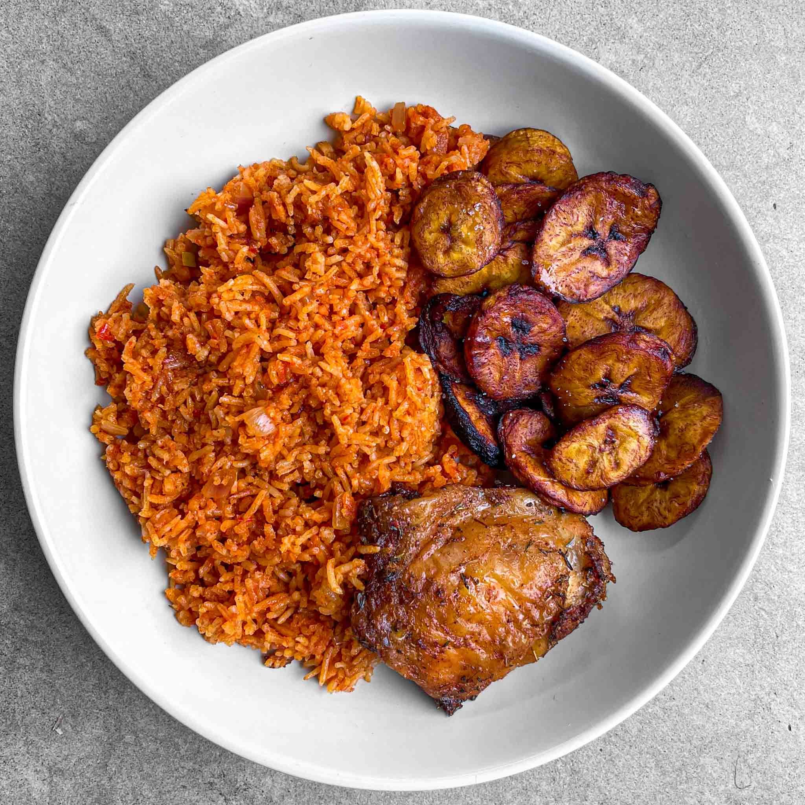

jollof-rice
Description
Spiced Jollof rice, can be served with shito
Ingredients
- Rice
- vegetables(Pepper, Tomatoes, onion, ginger and garlic)
- Pepper
- Powdered pepper
- Beef
- Maggi cube
- Bay leaves
- White pepper
- vegetable oil
- Pour your preferred quantity of oil into a saucepan and heat for 5 mins.
- Add your diced onions and beef and stir until golden brown
- Blend and add your fresh tomato, ginger, garlic and pepper and sir for 8 mins
- Add your tomato paste and powdered pepper and stir till evenly mixed
- Add your maggi cube, bay leaves and white pepper, stir till your sauce is well cooked
- Then, add your washed rice and stir till evenly mixed for 5 mins, add salt to taste
- Add a good quantity of water and allow to cook
- Between 15 mins interval stir your rice and adjust the heat till your rice is properly cooked.